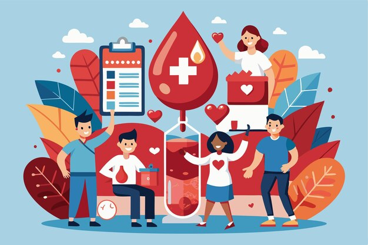

Service, community, and personal values
Leadership and Community
I care about learning, service, and being useful to the people around me. This page reflects that side of my life beyond coursework.

Membership
BADHAN
As a member of a voluntary blood donor organization, I take part in awareness campaigns and community-focused service activities. It has helped me value empathy, responsibility, and teamwork.
Personal qualities
How I work with others
- Patient communicator through tutoring
- Reliable and consistent in long-term commitments
- Curious, self-directed, and eager to learn
- Motivated by practical impact and ethical technology use
Extracurricular interests
Balance and personality
These interests say a little more about what keeps me curious and engaged outside the classroom.
Soccer
A source of energy, teamwork, and discipline.
Programming
A practical outlet for curiosity, logic, and self-development.
Technology for good
My interest in automation, cybersecurity, and e-waste comes from wanting technology to be useful, responsible, and relevant to real problems.